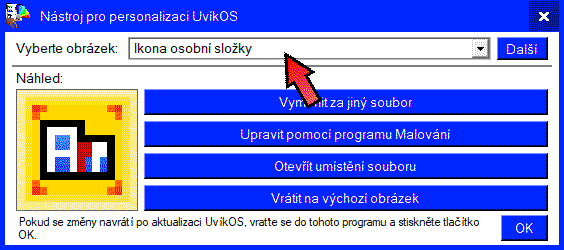

Nejprve si vyberte obrázek, který chcete změnit.
obrázek:

Poté, co si vyberete obrázek, vyberte si, jakým způsobem jej chcete změnit.
Jsou uvedené 4 možnosti:
- Vyměnit za jiný soubor:
Tato možnost otevře okno průzkumníka souborů. V něm si vyberte obrázkový soubor, kterým se nahradí originální ikona/obrázek.
- Upravit pomocí programu Malování:
Tato možnost otevře program Malování. V něm uprave obrázek, uložte jej, a poté zavřete program Malování.
- Otevřít umístění souboru:
Tato možnost otevře okno průzkumníka souborů. V něm bude otevřená složka, ve které se vybraný soubor nachází. Tato možnost je určena pro experty.
- Vrátit na výchozí obrázek:
Tato možnost vrátí vybraný obrázek na výchozí.
Až budete hotovi s přizpůsobováním obrázků, stiskněte tlačítko OK. Program uloží nastavení a restartuje UvíkOS, aby byly změny viditelné.